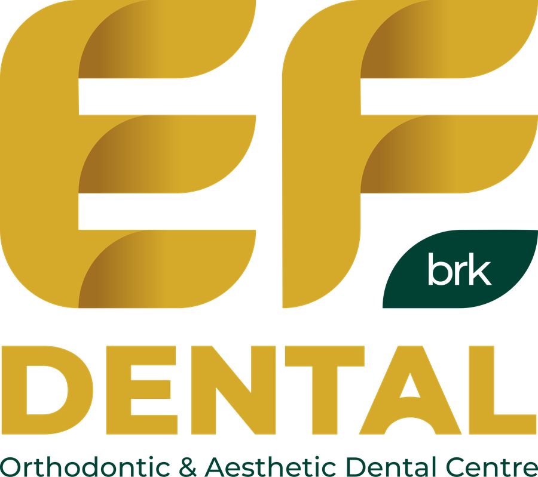

Layanan Kami
- Pemeriksaan & konsultasi gigi
- Ortodonti — behel & perapian gigi
- Perawatan estetika gigi
- Penambalan & perawatan saluran akar
- Scaling & pembersihan karang gigi
- Pencabutan & bedah minor
- Gigi tiruan & mahkota
- Perawatan gigi anak
Klinik Utama Rawat Jalan

Perawatan gigi dan mulut untuk keluarga di Kediri — ortodonti, estetika, dan perawatan gigi menyeluruh.
Alamat
Jl. Kilisuci, Ruko Garden Ville A5, Kel. Jamsaren, Kec. Pesantren, Kota Kediri, Jawa Timur 64129
Buka di Google Maps →Jam Layanan
Setiap hari
09.00 – 21.00 WIB
WhatsApp Klinik